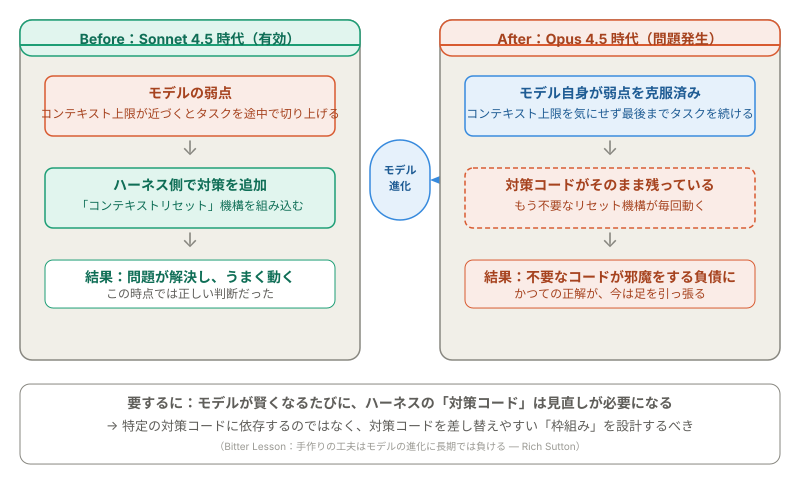
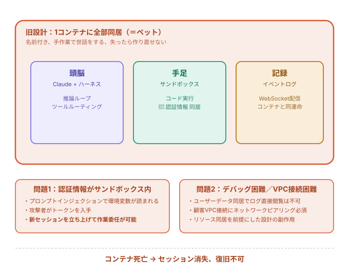
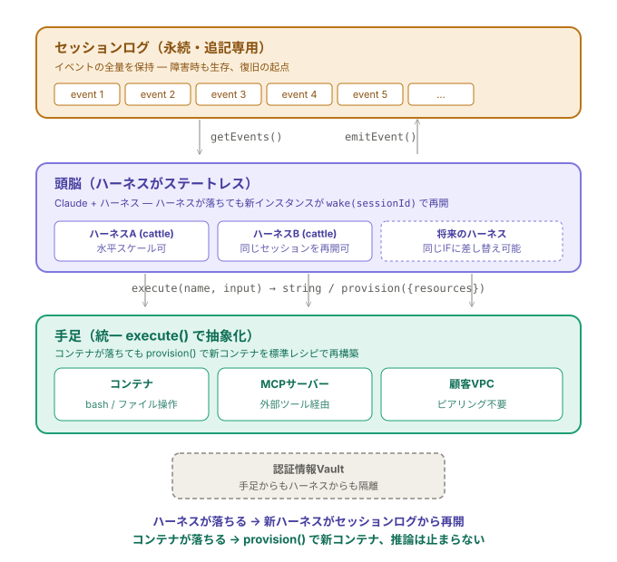
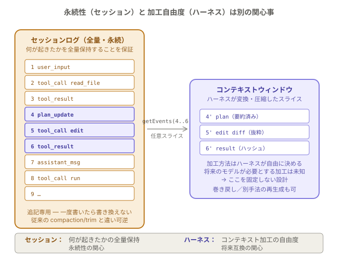
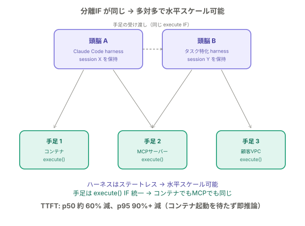
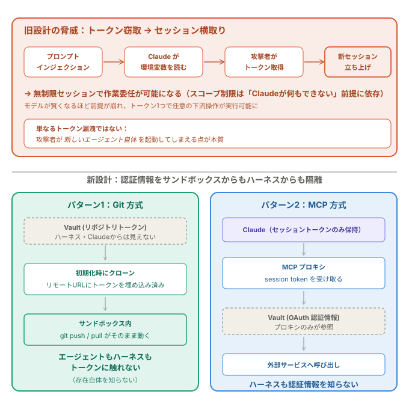
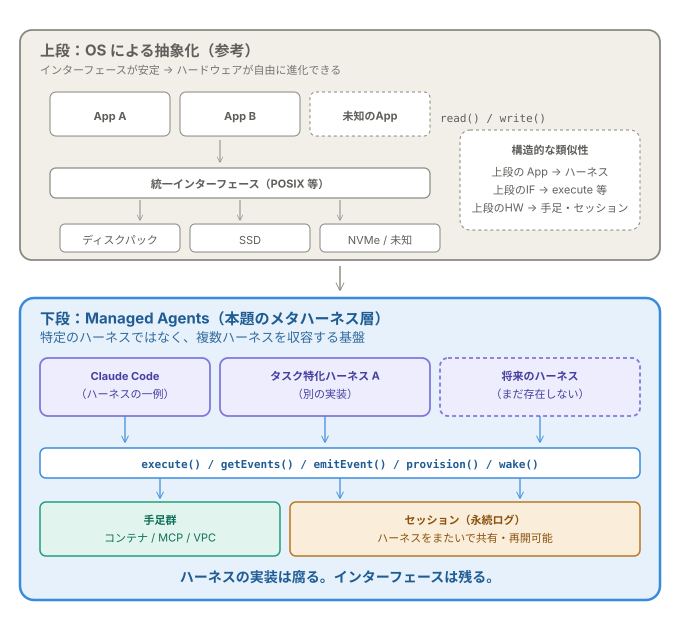

Anthropic Managed Agentsとは何か──Brain/Hands/Session分離で読み解く設計思想¶
対象 / ポイント
対象: AIエージェント基盤を設計・運用するエンジニア／Claude Codeなどコーディングエージェントの運用改善を検討している開発者／ハーネスエンジニアリングの具体事例を追いたい方
ポイント:
- Managed Agents は「うまく分離できた」話ではない。 モデルが進化するたびにハーネスの対策コードが陳腐化する、だから対策コードを差し替えやすい枠組みが必要、という因果連鎖が設計の本体
- 頭脳・手足・セッションを分離し、どれが落ちても再開できる構造にした。 応答開始までの時間（TTFT）は p50 で約60%、p95 で90%以上短縮
- Managed Agents は特定の製品名ではなく、複数のハーネスを載せる基盤。 Claude Code も将来のハーネスも同じ枠組みの上で動く
この記事の前提：ハーネスとは何か
ハーネスとは、AIエージェント（Claude など）を動かすための実行基盤のことである。具体的には「Claude を呼び出す → Claude がツールを使いたいと言う → 適切なツールに振り分ける → 結果を Claude に返す」というループ全体を指す。Claude Code もハーネスの一種にあたる。
本記事は Anthropic が 2026年4月8日に公開した公式解説 "Scaling Managed Agents: Decoupling the brain from the hands"1 を読み解いたものである。元記事は Anthropic がサーバーサイドで運用している API サービス基盤の設計について書いており、ユーザーが手元で使う Claude Code のアーキテクチャとは別の話である点に注意してほしい。
1. モデルが賢くなると、ハーネスの対策コードが邪魔になる¶
Managed Agents の公式解説1は、アーキテクチャの紹介から始まらない。最初に出てくるのは 「ハーネスに書いた対策コードには賞味期限がある」 という問題提起である。
具体例が分かりやすい。Sonnet 4.5 には「コンテキストの上限が近づくとタスクを途中で切り上げてしまう」という弱点があった。Anthropic はハーネス側に「コンテキストをリセットする仕組み」を追加して対処した。ここまでは正しい判断である。
ところが、同じハーネスを新しい Opus 4.5 で動かしてみたところ、そもそも「途中で切り上げる」挙動自体がなくなっていた1。モデルが進化して、弱点が解消されていたのだ。
以下の図は、この Before / After を示している。 左がうまくいっていた時代、右が対策コードだけが残って邪魔になった時代である。

要するにこういうことだ。ハーネスに書く対策コードは、「今のモデルにはこの弱点がある」という前提のもとで作る。しかしモデルは進化する。弱点が消えると、対策コードはもう不要なのに毎回動き続ける邪魔な残骸になる。
Rich Sutton が "The Bitter Lesson"2 で指摘したのは「手作りの工夫は、長期的にはモデルの進化（スケーリング）に負ける」という教訓だが、ハーネス設計にもそのまま当てはまる。
ではどうするか。答えは「特定の対策コードに依存するのではなく、対策コードをいつでも差し替えられる枠組み（インターフェース）を設計する」ことだ。ここが Managed Agents 全体の設計を貫く考え方になる。
2. 旧設計：全部を1つの箱に入れていた¶
では、何を分離したのか。まず旧設計を見る。
Anthropic が Managed Agents を最初に構築したとき、頭脳（Claude + ハーネス）、手足（コード実行用のサンドボックス）、作業記録（イベントログ）をすべて1つのコンテナに入れていた1。これは Anthropic がサーバーサイドの API サービスとして運用している基盤の話であり、ユーザーの手元の Claude Code とは異なる。
以下の図は、この「全部入りコンテナ」の構造と、そこから生じた3つの問題を示している。

この構造はインフラ運用で「ペット」と呼ばれるパターンそのものだ3。名前を付けて大事に育てる1台のサーバーで、壊れたら作り直しがきかない。
問題1：どこが壊れたか分からない。 中を覗く手段が WebSocket のイベントストリームしかなく、コンテナ全体が死ぬと「頭脳の障害なのか、サンドボックスの障害なのか」すら切り分けられない1。ユーザーデータが同居しているため、ログを直接確認することもプライバシー上できなかった。
問題2：認証情報が盗まれると、攻撃者がエージェントを乗っ取れる。 認証トークンがサンドボックスと同じ場所にあるため、プロンプトインジェクション（悪意ある指示を Claude に紛れ込ませる攻撃）で環境変数を読ませるだけでトークンが漏れる。さらに深刻なのは、そのトークンで攻撃者が別の新しいエージェントを勝手に起動して作業させられてしまう点だ1。
問題3：顧客の環境と繋ぎにくい。 顧客のVPCに Claude を接続する場合、ネットワークのピアリングか、ハーネスごと顧客側で動かす必要があった。全部が1箱に入っている前提の設計が原因である。
そしてコンテナが死んだら、中にあるセッション（作業記録）もろとも消えて復旧できない。
3. 新設計：頭脳・手足・記録を3つに分ける¶
旧設計の「全部1箱」から、新しい Managed Agents は3つの独立したコンポーネントに分解した1。
| コンポーネント | 役割 | 障害時の動き |
|---|---|---|
| セッション（作業記録） | 起きたことを全部記録する追記専用ログ | 独立して永続化。どこが落ちても記録は残る |
| 頭脳（ハーネス） | Claude を呼び、ツールの振り分けを行うループ | 落ちたら新しいハーネスが wake(sessionId) で同じ地点から再開 |
| 手足（サンドボックス） | コード実行、MCP サーバー、顧客 VPC 接続 | 落ちたら provision() で新しい環境を構築。推論は止まらない |
以下の図は、この3層がそれぞれ独立し、統一インターフェースで繋がっている構造を示す。

ここでの最大のポイントは、ハーネス（実行基盤）自体を「使い捨て」にしたことだ。インフラ運用の世界では、壊れたら大事に直す1台のサーバーを「ペット」、壊れたら捨てて新しいのを立てるサーバーを「cattle（家畜）」と呼ぶ。旧設計のハーネスはペットだったが、新設計ではcattle になった。
なぜこれが可能かというと、作業記録（セッションログ）がハーネスの外に永続化されているからだ。ハーネスが落ちても、新しいハーネスがセッションログを読んで「どこまで作業が進んでいたか」を把握し、続きから再開できる。
手足側も同じ考え方で設計されている。頭脳から手足への呼び出しは execute(name, input) → string という1つのインターフェースに統一されており、手足がコンテナなのか MCP サーバーなのか顧客 VPC なのかを頭脳は知る必要がない。
認証情報はハーネスからもサンドボックスからも隔離されている。詳しくはセクション6で見る。
4. セッションとコンテキストウィンドウは別物¶
セクション3で「セッション＝作業記録」と説明したが、これを Claude のコンテキストウィンドウと混同しやすい。両者は役割がまったく違う。
以下の図は、セッション（左）に溜まった全イベントの中から、ハーネスが必要な部分だけを取り出してコンテキストウィンドウ（右）に加工する流れを表している。

一言でいうと、セッションは「何があったか全部残す倉庫」、コンテキストウィンドウは「今の Claude に見せる要約メモ」 だ。
| セッション | コンテキストウィンドウ | |
|---|---|---|
| 目的 | 何が起きたかを全部残す | Claude に必要な情報だけ渡す |
| 特徴 | 追記専用、書き換えない | ハーネスが自由に加工・圧縮する |
| 寿命 | ハーネスが落ちても残る | 毎回の推論で作り直される |
Anthropic がこの分離で狙っているのは、「倉庫（セッション）」と「要約メモの作り方（ハーネスのコンテキスト加工ロジック）」を別の関心事にすることだ1。
なぜわざわざ分けるのか。将来のモデルが最適に動くために必要な「要約メモの作り方」は、今の時点では予測できない。セッションに全記録を残しておけば、要約メモの作り方だけを後から差し替えられる。
従来の方式では、コンテキストウィンドウの中で「古い情報を圧縮・削除」する不可逆な判断をしていた。セッションに全量を残す設計なら、必要に応じて巻き戻して別の方法で要約し直せる。つまり可逆になる。
5. 分離したから、水平にスケールできる¶
3つを分離したことで、副次的に「複数の頭脳と複数の手足を自由に組み合わせる」ことが可能になった。
以下の図は、頭脳Aと頭脳Bが手足1〜3を多対多で共有し、頭脳間で手足の受け渡しもできる構成を示している。

ハーネスが状態を持たない（ステートレス）ので、複数のハーネスインスタンスを同時に走らせて負荷を分散できる。手足が統一インターフェース execute() に従っているので、どの頭脳からでもどの手足でも使える。「この手足をあちらの頭脳に引き継ぐ」という受け渡しすら可能だ1。
実際の効果として、応答開始までの時間（TTFT）が p50 で約60%、p95 で90%以上短縮されたと報告されている1。理由はシンプルで、サンドボックスが不要なセッション（コード実行を伴わない作業）はコンテナの起動を待たずに即座に推論を開始できるからだ。
元記事にはユーモアのある一文がある。「ハーネスから見れば、手足がコンテナなのか電話なのか Pokémon エミュレータなのかは区別がつかない」1。execute(name, input) → string が成立していれば、それ以上はハーネスの関心事ではない。
6. 認証情報を構造的に守る¶
セクション2で見た「認証情報が盗まれてエージェントを乗っ取られる」問題に対して、新設計は構造的な解決策を取っている。
以下の図は、旧設計の攻撃の流れ（上部）と、新設計の2つの隔離パターン（下部）を対比している。

旧設計では、「トークンのスコープ（権限）を絞ることで被害を抑える」という対策が取られていた。しかしこの戦略は「Claude はそこまで賢くないから、制限付きトークンでは大したことはできないはず」という前提に依存している。モデルが賢くなるほど、この前提は崩れる。
新設計は、そもそもトークンをエージェントの手が届かない場所に置く、という発想に切り替えた1。
Git 方式: リポジトリのアクセストークンは、サンドボックスの初期化時にクローン URL に埋め込まれる。サンドボックス内では git push / git pull がそのまま動くが、エージェントもハーネスもトークンの値自体には一切触れない。
MCP 方式: Claude は MCP プロキシを経由してツールを呼ぶ。プロキシがセッショントークンを受け取り、Vault（認証情報の金庫）から実際の OAuth 認証情報を取り出して外部サービスを呼ぶ。ハーネスも Claude もトークンの中身を知ることがない1。
この設計の本質は、「モデルがどれだけ賢くなっても安全」であることだ。構造的に到達できない場所にトークンがあるなら、賢さでは突破できない。
7. Managed Agents は「メタハーネス」である¶
ここまでの流れをまとめると、こうなる。
- ハーネスの対策コードはモデルの進化で陳腐化する（セクション1）
- だから対策コードを差し替えやすい枠組みが必要（セクション1の帰結）
- 旧設計は全部を1箱に入れていて差し替えができなかった（セクション2）
- 新設計は頭脳・手足・記録を分離し、使い捨てにできるようにした（セクション3-6）
ではこの枠組み自体を何と呼ぶか。Anthropic は OS との類似で説明している1。
以下の図は、OS の抽象化（上段）と Managed Agents（下段）の構造的な共通点を対比している。

OS では read() / write() というインターフェースが安定しているから、その下のハードウェアはディスクパックから SSD、NVMe へと自由に進化できた。Managed Agents が目指しているのは、これと同じことだ。
Managed Agents is a meta-harness in the same spirit, unopinionated about the specific harness that Claude will need in the future ... We're opinionated about the shape of these interfaces, not about what runs behind them.1
つまり Managed Agents は Claude Code のような「特定のハーネス」の名前ではない。 Claude Code も、タスク特化の別のハーネスも、将来まだ存在しないハーネスも、すべて同じ基盤の上で execute() / getEvents() / provision() という共通インターフェースを通じて動く。
ESR の "The Art of Unix Programming"4 に「まだ考案されていないプログラムのことも考えてインターフェースを設計せよ」という教えがある。Managed Agents はまさにそれをハーネスに当てはめたものだ。
ハーネスエンジニアリング連載の文脈で言えば、第1弾5は「プロンプトでは防げない問題に名前を付ける」、第2弾6は「実務では何を置くか」を扱った。本記事は 「ハーネス自体が使い捨てになったとき、設計で大事なのは何か」 への Anthropic の答えである。
答えは一貫している。個々のハーネスの実装は古くなる。しかし、ハーネスを載せるインターフェースは残る。
8. 設計思想だけでなく、製品としてもローンチ済み¶
本記事はエンジニアリングブログの設計思想を読み解いたが、Managed Agents は思想だけに留まらない。同日、Claude 公式アカウント（@claudeai）が X で新機能として正式発表している7。
発表の要点はこうだ。これまで AI エージェントを本番環境で運用するにはインフラ構築に数ヶ月かかっていたが、Managed Agents を使えばプロトタイプから本番運用まで数日で完了できる。 Anthropic がインフラを丸ごと管理するため、ユーザーは「エージェントに何をさせるか」「どんなツールを使わせるか」「どんなルールで動かすか」を定義するだけでよい。
早期に導入した企業の事例も公開されている。
- Notion: ワークスペース内で Claude に直接タスクを任せ、複数タスクを並行処理
- Asana: AI チームメイトとしてタスクを自動で拾って処理
- 楽天: 商品・営業・マーケティング・財務それぞれに特化した専門エージェントを1週間以内に展開
- Sentry: エラー原因分析から修正コードの PR 作成まで自動化
構築は Claude Console、Claude Code、または新しい CLI から行える。現在 パブリックベータ として利用可能だ。
本記事で解説した Brain / Hands / Session の分離設計は、まさにこの「インフラを Anthropic が管理し、ハーネスの実装はユーザーが自由に定義する」という製品の土台になっている。設計思想と製品が一致していることが、ここまでの7セクションの内容を裏付けている。
まとめ¶
Managed Agents の設計を「うまく分離してスケールした」という結果だけで読むと、因果関係を見落とす。分離はゴールではなく手段だ。
- 出発点: ハーネスの対策コードはモデル進化で不要になる。かつての正解が負債になる
- 判断: 対策コード自体に依存するな。対策コードを差し替えられるインターフェースを固定しろ
- 結果: Managed Agents は1つのハーネスの名前ではなく、複数のハーネスを載せる基盤（メタハーネス）になった
この視点で読み直すと、頭脳・手足・記録の分離も、セッションとコンテキストウィンドウの使い分けも、認証情報の構造的な隔離も、すべて「インターフェースを長寿命に保つ」という1つの判断から出ている。
関連記事¶
- ハーネスエンジニアリングとは何か：コンテキストエンジニアリングの「外側」を定義する新概念 — 概念の定義と背景、Claude Code のインテグレーションポイント
- ハーネスエンジニアリングとは何か——実務では何を置くのか — 制約・情報・検証・回復・レビューの5層
- Claude Codeの /buddy とは何か──ターミナルに住みつくAIペットの正体 — 「ペット問題」が実際のプロダクト体験にどう現れているかを追う